Fasting, with a pause button.
A calm intermittent-fasting timer for iPhone and Apple Watch. No account, no sign-in. Your data stays on your devices.
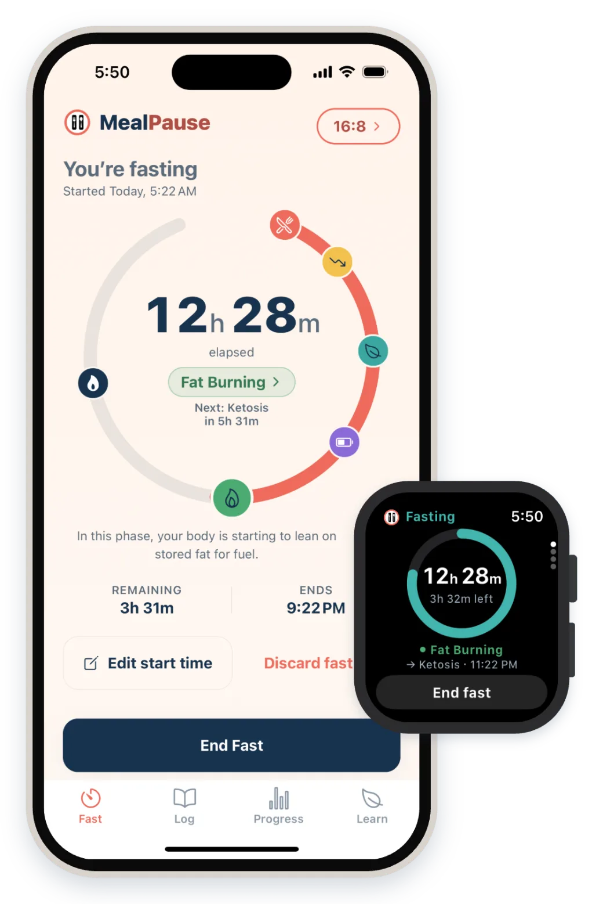
Follow every stage
See what may be happening in your body as the hours pass, across 9 fasting stages.
On your wrist and Lock Screen
Apple Watch app, widgets, a Live Activity and the Dynamic Island.
Every fast, kept
Your history and calendar, with notes, water and weight.
Private by design
No account, no ads, no third-party tracking.
How it looks.
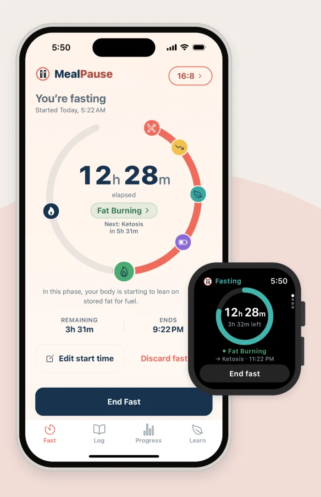
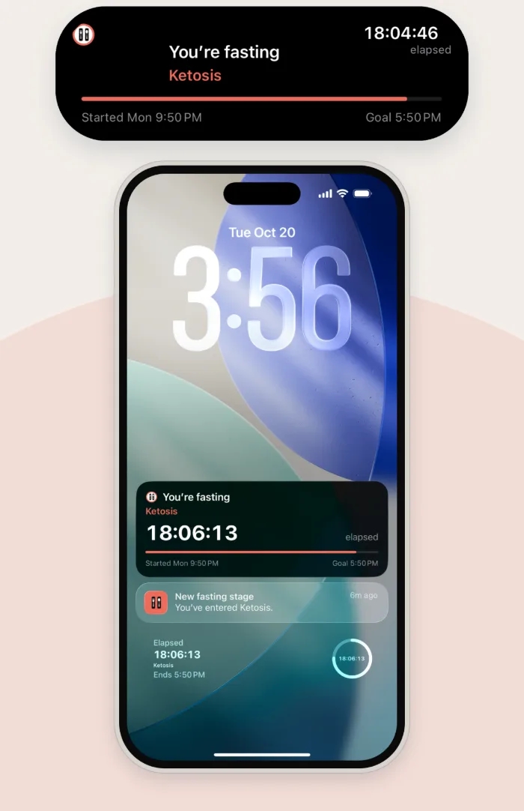
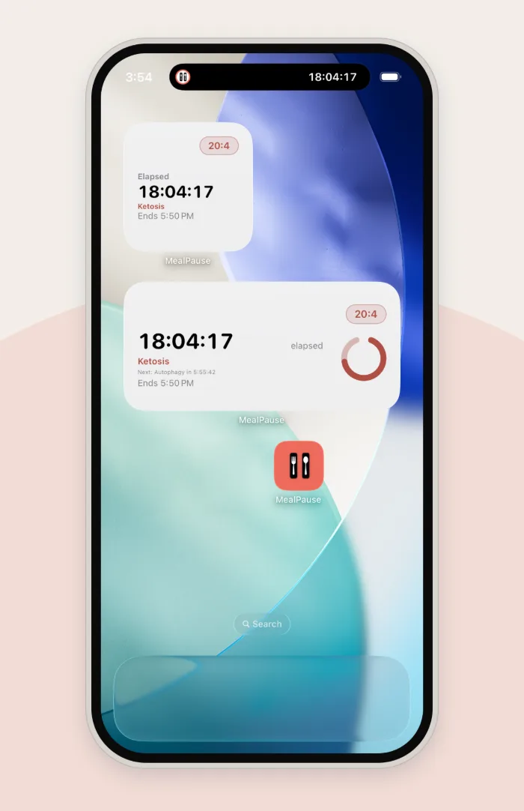
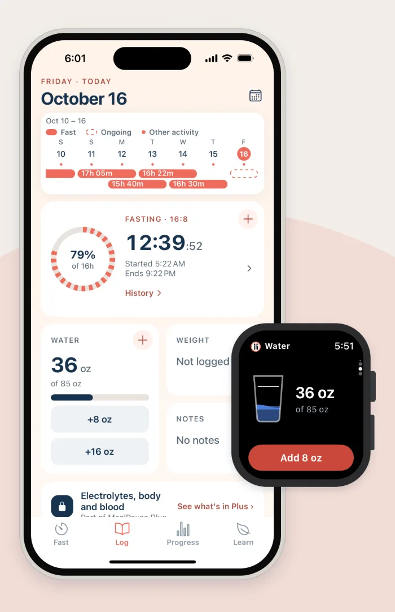
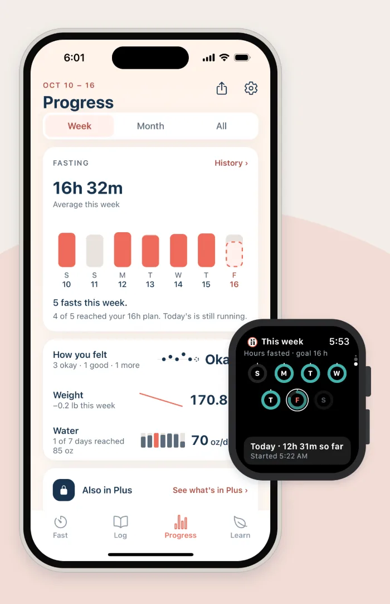
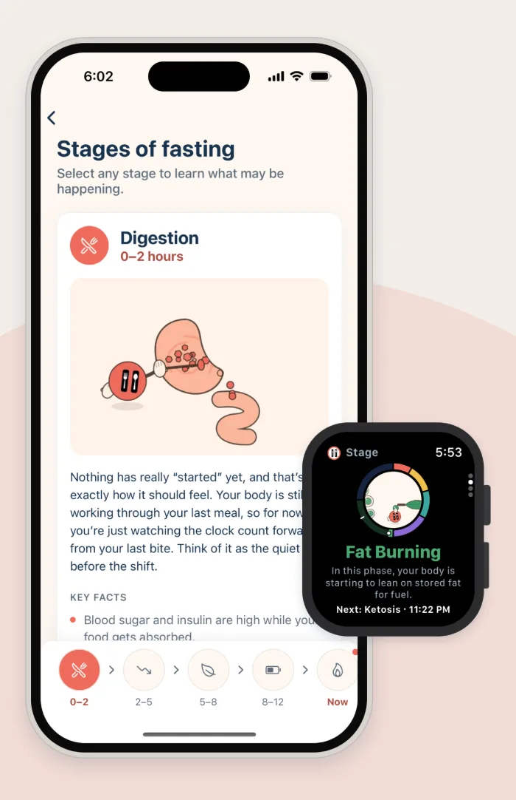
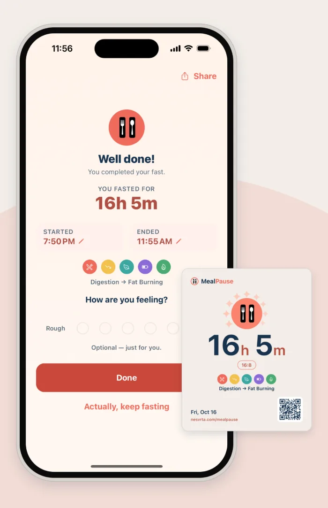
The Lock Screen and Home Screen pictures show a 20:4 fast, one of the longer plans in MealPause Plus.
On your wrist.
Start and end a fast, log water, and see your stage and your week from your wrist, with complications and Smart Stack.
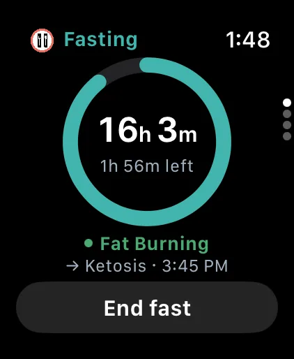
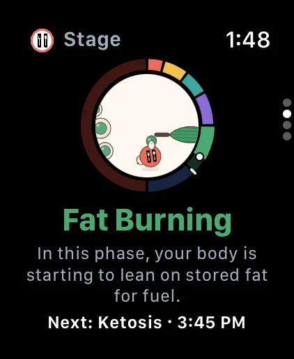
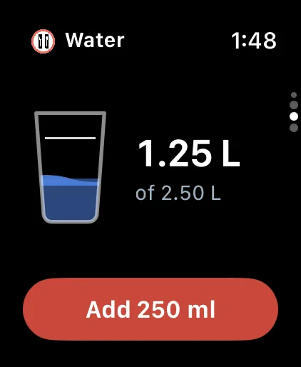
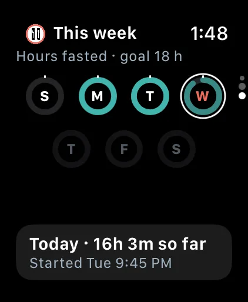
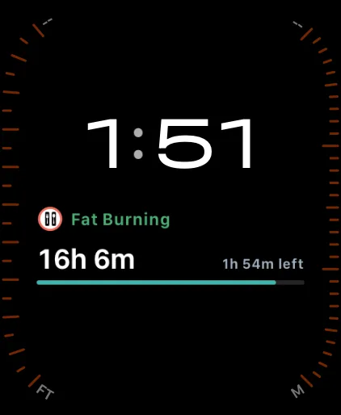
Shown during an 18:6 fast, one of the longer plans in MealPause Plus.
Log, look back, learn.
Log
- Water, weight and notes.
- Electrolytes, body measurements and blood markers. (MealPause Plus)
Progress
- Statistics by week, month and all time.
- Share a card when you reach a goal, or share your week.
Learn
- 24 articles and 18 recipes.
- 12 articles are free, including every safety article.
- 12 more in-depth articles on weight, sleep, food and your body. (MealPause Plus)
Apple Health
- Optional sync for weight and water, off until you turn it on.
Also
- Reminders with quick actions on phone and wrist
- Backups and Excel export
- Dark and pitch-black themes
- 7 languages
Private by design.
There is no account and no sign-in. Everything you record — your fasts, notes, weight, water, measurements, goals and settings — is stored only on your device. There are no ads and no third-party tracking or analytics in the app.
Only two things ever leave your phone, and neither is anything you record: an anonymous check whether MealPause Plus is active, and, if your plan includes a gift, a request for your gift code.
Read the Privacy PolicyWhat’s free, and what Plus adds.
Free
- Fasting timer with daily plans from 11:13 up to 16:8 (11:13, 12:12, 14:10, 16:8), plus Flexi for days that don’t fit a plan
- The guided program Ease In
- All 9 fasting stages
- Apple Watch app, complications and Smart Stack
- Home Screen and Lock Screen widgets; Live Activity on the Lock Screen and in the Dynamic Island
- Reminders with quick actions on phone and wrist
- Statistics, calendar and full fast history; shareable cards
- Notes, weight and water; Apple Health sync for weight and water
- Dark and pitch-black themes; backups and Excel export
- 12 articles, including every safety article; 18 recipes
MealPause Plus
A subscription for people who want to go further.
- Longer plans: 18:6, 19:5, 20:4 and OMAD
- Guided programs: 21-Day Progressive, Build Routine, Go Deeper
- Custom schedules
- Electrolytes, body measurements and blood markers
- Water reminders on your own interval
- 12 in-depth articles on weight, sleep, food and your body
Questions
Is MealPause free?
Yes. MealPause is a free download, and the timer, all 9 stages, the Apple Watch app, widgets, Live Activity, history, notes, water and weight are free. MealPause Plus adds longer plans, guided programs, custom schedules, more logs and in-depth articles.
Do I need an account?
No. There’s no account and no sign-in.
Do I need an Apple Watch?
No. The watch app is optional; everything works on iPhone.
What do I need?
An iPhone with iOS 16.4 or later. The watch app needs watchOS 9.0 or later. MealPause is not available for iPad, Mac or Apple Vision Pro.
Does it work offline?
Your timer and everything you log work without a connection. Checking MealPause Plus and loading a gift code need one.
Which languages?
English, Deutsch, Español, Italiano, Français, Português and العربية.
How do I cancel MealPause Plus?
In your iPhone’s Settings › your name › Subscriptions. Subscriptions renew automatically until you cancel.
Is this medical advice?
No. MealPause shares general wellbeing information, not medical advice. Fasting is not right for everyone. Please don’t fast if you are pregnant or breastfeeding, are under 18, or have or have had an eating disorder, unless your care team agrees. Talk to a doctor first if you have diabetes, take regular medication, have another medical condition, are underweight, or are recovering from surgery.